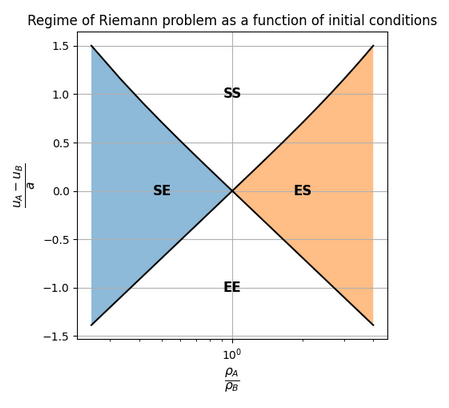

20.1. P-system#
Riemann problem in the P-sys. 1-dimensional P-sys is a two-variable hyperbolic system. Riemann problem for the P-sys aims at finding the two waves (either shock or expansion waves), connecting the uniform regions with conservative variables \(\mathbf{u}_L\), \(\mathbf{u}_R\) on the left and the right of the discontinuity respectively, through one intermediate state \(\mathbf{u}_1\) to be determined as a part of the solution of the Riemann problem.

Details of the Riemann problem
Depending on the value of the intermediate state \(\mathbf{u}_1\),
the left wave is
a rarefaction wave if \(u_L < u_1\)
a shock wave if \(u_L > u_1\)
the right wave is
a rarefaction wave if \(u_1 < u_R\)
a shock wave if \(u_1 > u_R\)
For two states connected by a shock wave, Rankine-Hugoniot relation holds
For two states connected by an expansion wave, the following relation holds
Entropy condition
The eigenvalues of the P-sys are \(s_{1,2} = u \mp a\). Entropy condition can be summarized as:
characteristic lines enters a shocks
diverging characteristic lines of are connected by an exapansion fan, with a smooth solution
Solution of the Riemann problem
For simple and low-dimensional problems like P-sys, an analytical solution is feasible
Case 1. 1: shock, 2: shock. For the entropy condition, \(u_A \ge u_1 \ge u_B\).
Details
and thus \(\rho_1 \ge \max\{ \rho_A, \rho_B \}\).
Limiting cases.
This is an increasing functon in \(\rho_1\).
If \(\rho_A \ge \rho_B\), the limiting case is \(\rho_1 = \rho_A\), i.e.
If \(\rho_B \ge \rho_A\), the limiting case is \(\rho_1 = \rho_B\), i.e.
Intermediate state. RH equations are solved for \((\rho_1, u_1)\).
…
Case 2. 1: rarefaction, 2: shock. For the entropy condition, \(u_A \le u_1\), and \(u_1 \ge u_B\).
Details
and thus \(\rho_1 \in [\rho_B, \rho_A]\).
Limiting cases.
This an increasing function in \(\rho_1\).
At the lower bound, \(\rho_1 = \rho_B\)
At the upper bound, \(\rho_1 = \rho_A\)
Intermediate state. RH equations are solved for \((\rho_1, u_1)\).
…
Case 3. 1: shock, 2: rarefaction. Symmetric w.r.t. case 2. For the entropy condition \(u_A \ge u_1\), and \(u_1 \le u_B\).
Case 4. 1: rarefaction, 2: rarefaction. For the entropy condition \(u_A \le u_1 \le u_B\).
Details
and thus \(\rho_1 \le \min\{\rho_A, \rho_B\}\).
Limiting cases.
This an increasing function in \(\rho_1\).
If \(\rho_A \le \rho_B\), the limiting case is \(\rho_1 = \rho_A\), i.e.
If \(\rho_B \le \rho_A\), the limiting case is \(\rho_1 = \rho_B\), i.e.
Intermediate state. RH equations are solved for \((\rho_1, u_1)\).
Differential equations. In conservative form
with constant speed of sound \(a\). Convective form reads
Spectral decomposition - Characteristics
Eigenvalues.
Right eigenvectors.
Left eigenvectors.
Spectral decomposition.
Characteristic lines and Riemann invariants. Let \(\mathbf{v}\) the characteristic variables defined by the condition \(d \mathbf{v} = \mathbf{L} d \mathbf{u}\), the PDE
after multiplying by \(\mathbf{L}\) on the left, becomes the diagonal system of equation
Let \(\mathbf{V}(t) = \mathbf{v}(X(t),t)\) the value of the characteristic variables on the line \(X(t)\). Exploiting the derivation of composite functions,
and inserting in the PDE,
Characteristic lines are defined by the condition \(\dot{X}_i(t) = s_i(\mathbf{U}(t))\), and on these lines \(d_t V_i = 0\), i.e. the \(i^{th}\) characteristic variable is constant on the characteristic lines of the \(i^{th}\) family. For a P-sys, characteristic lines of family 1, 2 satisfy
with \(\dot{m} = \dot{\rho} u + \rho \dot{u}\)
Integral equations. On a control volume \(V\) at rest
and for an arbitrary volume \(v_t\)
Jump conditions.
Shocks
The speed of the shock can be written as a function of the physical quantities on its sides, with \(n\) different expressions, one per component of the relation
here for the P-sys
and thus
Comparing the two expressions of the speed of the shock, a relation between physical quantities on the sides of the shock appears
and thus the Rankine-Hugoniot relation follows
The speed of the shock is
Self-similar solutions at a discontinuity in the initial state.
Self-similar solution - expansion fan
With the similarity variable
and the function \(\mathbf{U}(\xi) = \mathbf{u}(x, t)\),
so that the equation becomes
This is an eigenvalue problem, as the trivial solution \(\mathbf{U}'(\xi) = \mathbf{0}\) can’t produce a smooth function between two discontinuous states. The solution of the eigenvalue problem reads
with right eigenvectors
These conditions define two families of expansion fans, one originating from the first family of charactersitic and one originating from the second family.
The derivative of the conservative variable w.r.t. \(\xi\) must be proportional to the right eigenvectors
or
Integration gives
and
The solution reads (see below for a very short review of the solution of this kind of ODE)
Let \(m(\xi) = \rho(\xi) u(\xi)\), then the velocity field is
This expression can be recast as a function of \(u\) and \(\rho\), as \(C(\xi - \xi_A) = \ln \frac{\rho_{1,2}}{\rho_A}\), as
Solution of the 1-st order linear non-homogeneous ODE
The solution of the homogeneous
is propoprtional to the forcing. The particular solution of the non-homogeneous equation has the form
so that its derivative is
Sostitution in the ODE gives
and thus \(b = A\). The solution of the non-homogeneous equation thus reads
with the integration constant \(a\) that is determined by a condition (initial, final, or whatever).